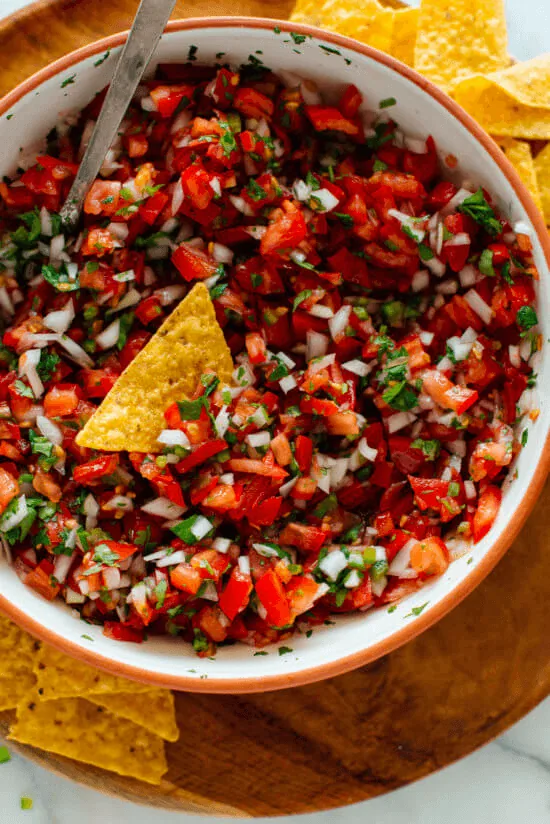

Appetizer
Pico de Gallo
A popular Mexican salsa made traditionally with tomatoes, onion, cilantro, and lime juice.
INGREDIENTS
Tap items to check offINSTRUCTIONS
Tap a step to mark completePico de Gallo
1. Combine chopped tomatoes, white onion, jalapeño, and cilantro in a medium bowl. Add lime juice and sea salt, toss gently to combine, and let sit 10–15 minutes before serving so the flavors meld.